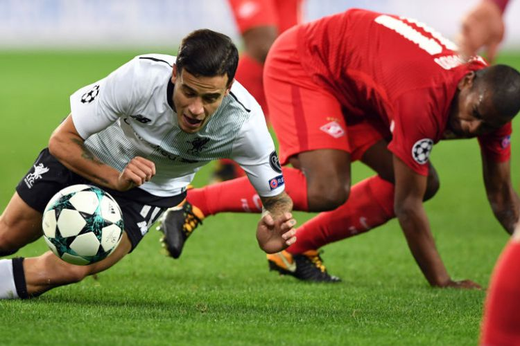

Hasil Liga Champions, Liverpool Kembali Gagal Menang
JALU WISNU WIRAJATI
KabarKabur.com - 27/09/2017, 03:55 WIB

Dua pemain Brasil, Coutinho dan Fernando, berebut bola pada pertandingan Liga Champions antara Spartak Moskva dan Liverpool di Moskwa, Selasa (26/9/2017).(AFP/Yuri Kadobnov)
KabarKabur.com - Liverpool kembali gagal mendulang poin penuh pada pertandingan kedua Liga Champions 2017-2018, Selasa (26/9/2017) atau Rabu dini hari WIB.
Bertandang ke Otkrytiye Arena. Liverpool bermain imbang 1-1 melawan tuan rumah Spartak Moskva. Inilah hasil imbang kedua The Reds setelah ditahan Sevilla pada laga pertama di Anfield, dua pekan lalu.
Pada pertandingan di Moskwa itu, Liverpool bahkan tertinggal terlebih dulu pada menit ke-23. Bermula dari pelanggaran Philippe Coutinho kepada Aleksandr Samedov, Fernando membawa tuan rumah setelah tendangan bebasnya tak bisa dibendung Loris Karius.
Namun, keunggulan tuan rumah hanya bertahan 8 menit. Coutinho membalas kesalahannya dengan mencetak gol penyeimbang setelah melakukan kerja sama 1-2 dengan Sadio Mane.
Setelah itu, Liverpool tampak mendominasi jalannya laga. Mereka memiliki 61 persen penguasaan bola dan 15 peluang, unggul jauh atas tuan rumah yang cuma punya tiga tembakan ke arah gawang The Reds.
Akan tetapi, dominasi dan keunggulan jumlah peluang itu sia-sia. Tak ada gol tambahan yang tercipta, Spartak Moskva 1-1 Liverpool.
Hasil ini membuat Liverpool untuk sementara berada di peringkat kedua dengan dua angka, unggul selisih gol atas Spartak. Sevilla yang menjadi unggulan pertama di grup ini, berada di puncak klasemen dengan empat poin.
Pada saat bersamaan, Sevilla menang telak 3-0 atas Maribor di Stadion Ramon Sanchez Pizjuan. Tiga gol tuan rumah diborong Wissam Ben Yedder.
Hasil Liga Champions Grup A:
Sevilla 3-0 Maribor (Wissam Ben Yedder 27', 38', 83'-penalti)
Spartak 1-1 Liverpool (Fernando 23' ; Philippe Coutinho 31')
penulis :JALU WISNU WIRAJATI
Editor :JALU WISNU WIRAJATI